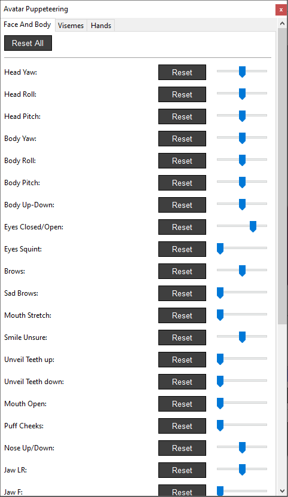
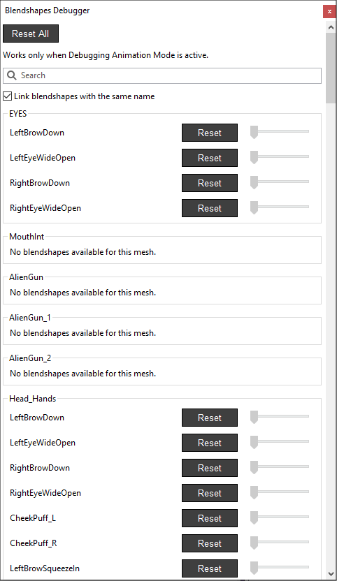
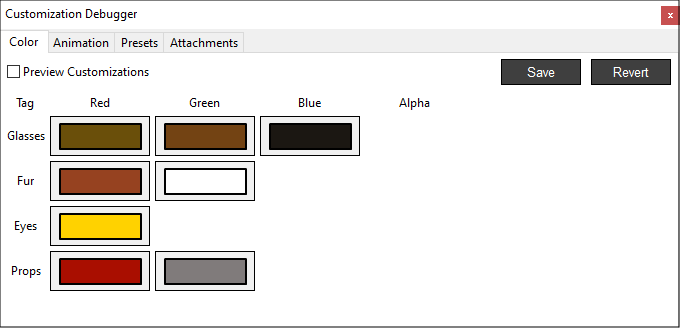
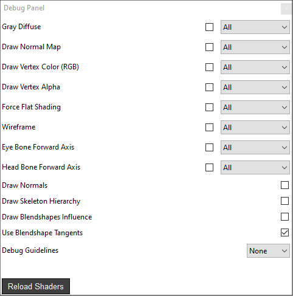
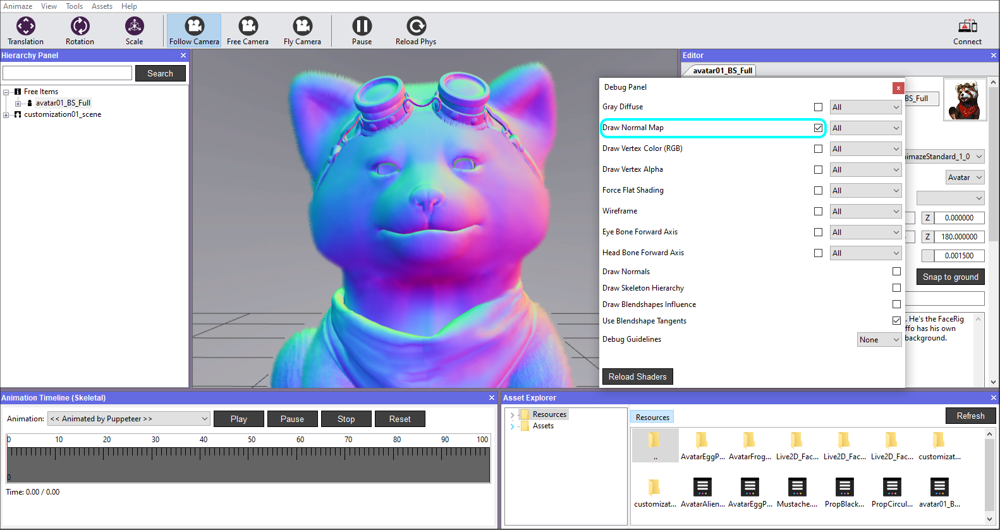
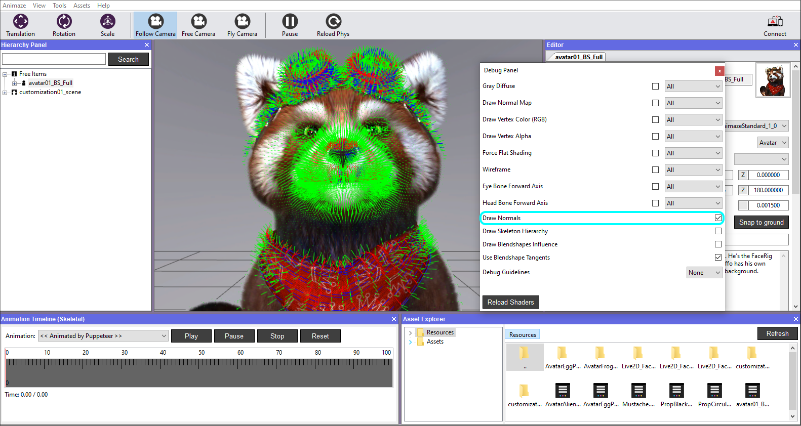
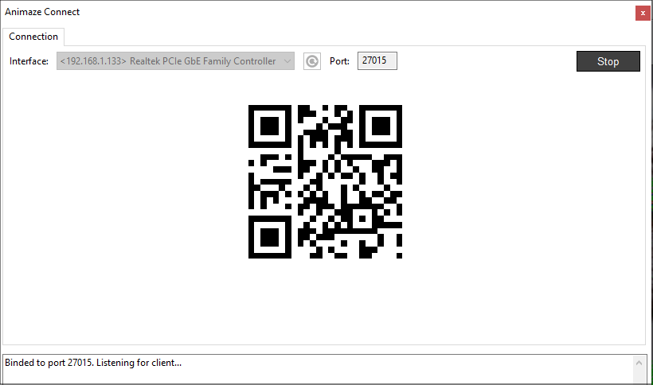
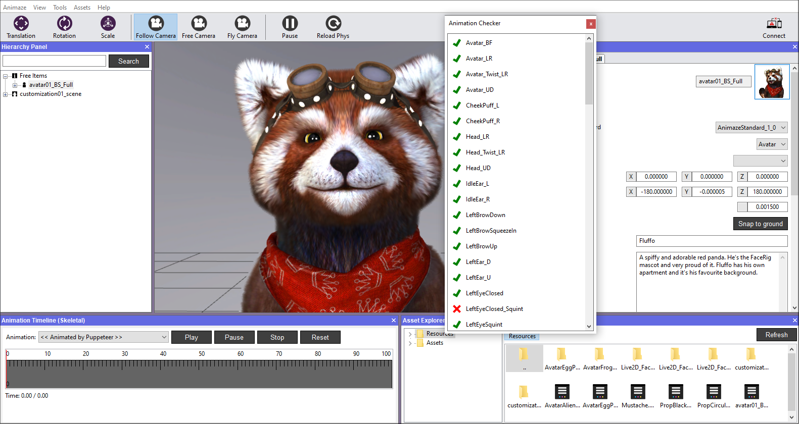
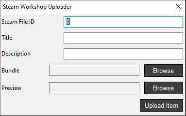

Top Bar Menu
The top bar menu holds the main functions of the Editor that are categorized as follows: Animaze, View, Tools, Assets, Animaze Storefront and Help. Below we detail the functions and features of every button and submenu of the top bar menu:
Animaze menu
Functions:
• Quit – exits the Editor.
View menu
The view menu holds the functions that display useful panels or information.
Functions:
• Editor Panel (Inspector) – opens up a contextual Inspector for the all items in the Hierarchy Panel.
• Items Hierarchy – opens up the hierarchy panel and displays in a hierarchic style all the existing items in the scene, including the scene itself. There are two different ways you can view and edit your items:
-
Free items – item is not attached to anything, you can view and edit the item in model space (object space), like in any other 3D model viewer software.
-
Scene – a scene that acts as a container for: skybox object, lighting setup (up to 4), props (3d models, particle systems etc.), sound sources, spawning locations.
All items in a scene are attached to the scene root, which happens to be the root of the render world (0,0,0 position, 0,0,0 orientation, 1.0 scale), and they will behave like attached items.
Changing transform properties (position, rotation, scale) while an item is attached to the scene, will change its properties in relation to the scene, not self, i.e. scaling a prop to 10.0, will make the prop bigger in the current scene, although if it is used in another scene, it will spawn with scale 1.
A scene can hold multiple props that move independently. They can be added by selecting the Scene in the Hierarchy Panel and right click on it, then add the desired item. The next one can be added as attachment to the current existing one, and you may move it independently, but as soon as you move the parent one, the newly added one will act as a child and move together with it.
• Animation Timeline (Skeletal) – is a skeletal animation debugging tool, which provides the means to view every skeletal animation separately, featured by the Avatar.
Note! Blendshapes will not be present in the Animation list, as they have a different data flow.
• Asset Explorer – opens the Asset Explorer box at the bottom with all the data containing folders.
• Console Log – opens the text log of all the info, warning error and fatal runs of the Editor.
• Weight Paint Mode – toggles the avatar skinning weights debug, for the bone selected from the hierarchy it paints white color if it has influences over the vertices, and black if not.
• Hide Selection Mesh – selecting meshes is no longer possible.
• Draw Debug Info – toggles the debug info drawing (the grid).
• Aspect Ratio – toggles between different sizes of the Viewport (e.g. you can choose 9:16 to see how the model would look like on a phone display) and enables you to set preferred own aspect.
• Reset Layout – resets all the panels to their default layout.
Tools menu
This menu holds functions that provide debugging tools for the 3D imported objects..
Functions:
-
Avatar Puppeteering – opens a box where the face animations, visemes and hands can be toggled with, check the eyes, tongue, head movement, and the option to check/uncheck the look-at-camera option throughout the debugging process.

-
Blendshapes Debugger – opens a box where the blendshape animations can be toggled with. The avatar must be in idle1 pose for them to work.

-
Customization Debugger
-
Color – opens a dialog box where you can test the color customization of the model in real-time before adding them as texture masks in the editor panel if desired.
-
Animation – toggle the values which modify the model’s various mesh proportions.
-
Presets - toggle preset customization types.
-
Attachments - simplified attaching system to test out the Attachment slots customization options (automatically detects props from the Resource folder)

-
Debug Panel – opens a floating menu with multiple debugging features available:

-
Gray Diffuse – the item will be displayed with a gray diffuse map >> the specular and normals info is easier to be read
-
Draw Normal Map – draws normal mappings with RGB color coding:
-
blue shades means normals are facing Z axis
-
red shades X axis
-
green shades Y axis.

Note! Black areas have normals with negative components, e.g. (0,-1,0) is translated to black.
-
Draw Vertex Color (RGB) – avatar us shaded with the color info in the vertices, ignoring the alpha channel.
-
Draw Vertex Alpha – avatar is shaded in grayscale showing the alpha info from the vertex color
-
Force Flat Shading – the item in the scene is displayed with no lighting influence >> the specular and diffuse info will not be read in this mode
-
Wireframe – the item in the scene is being displayed in wireframe mode
-
Eye’s Bone Forward Axis – displays the avatar’s eyes bones axis.
-
Head’s Bone Forward Axis – displays the avatar’s head bone axis
-
Draw Normals – draws green 3D lines on each vertex with the appropriate normal. They are not affected by Normal Mapping.

-
Draw Skeleton Hierarchy – will draw the skeleton hierarchy of every item loaded.
-
Draw Blendshapes Influence – draw the avatar Normals in Green if they are unaffected by the blendshapes and in Red if they are affected.
-
Use Blendshape Tangents – toggle blendshapes influence on tangents and binormals
-
Local Connect - opens the Animaze Connect dialog that enables you to send avatars, props and backgrounds to the iOS Animaze app. Please follow the guides.

-
Animation Checker – opens the animations list and cross-checks them with your loaded/imported avatar.

-
Replay system - enables you to play pre-recorded mo-capped animations on the current avatar in scene. Currently, this is a reserved item, there are no Animaze apps that can generate these replay files.
-
Batch bundler - bundles all existing resources in the Resources/ folder into separate .avatar files.
- Steam Workshop Uploader – this utility helps you upload your content (avatars, scenes or props) to Animaze’s Steam Workshop. Note that the uploaded can be used in Animaze Desktop application.

-
General Settings – opens a dialog box where the following actions are available:
-
set hotkeys as per your preferences
-
configure the Directories for Assets, Resources and Cache data.
-
set the near and far plane for the camera
-
tick/untick physics features
-
change language
Assets menu
The assets menu holds functions that can import assets, load already imported ones and different assets and resources related functions.
Functions:
• Load Avatar – opens a dialog box prompting to load an already imported/saved avatar.
• Load Scene – opens a dialog box prompting to load an already imported/saved scene.
• Add Prop – opens a dialog box prompting to add an already imported/saved prop in the scene.
• Add Avatar – opens a dialog box prompting to add an already imported/saved avatar in the scene.
• Import 3D Object – opens a dialog box prompting to import a .fbx file from a device location.
• Import Live2D Avatar – opens a dialog box prompting to import a .model file from a device location.
• Import Skybox – opens a dialog box prompting to import a background image from a device location.
• Import Skybox 2D
Help menu
This menu provides information about software licenses and the current version of the software. It also provides you with the links to the Asset creation manual and to the Editor User manual.